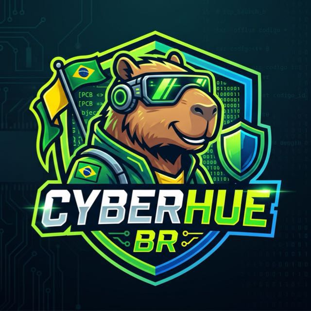

Aprender junto
Ninguém nasce sabendo ROP chain. Quem sabe ensina, quem não sabe pergunta. Iniciante é bem-vindo.

CYBERHUE BR// time brasileiro de CTF
Capivaras que capturam flags. Um grupo de pessoas curiosas que quebra coisas de forma ética, aprende em conjunto e publica o que aprendeu.
Ninguém nasce sabendo ROP chain. Quem sabe ensina, quem não sabe pergunta. Iniciante é bem-vindo.
Resolveu? Documenta. Cada desafio vira write-up no repositório para o próximo que vier.
Só atacamos o que temos autorização para atacar: plataformas de CTF, laboratórios e programas de bug bounty.
SQLi, XSS, SSRF, IDOR, JWT mal configurado e afins.
Buffer overflow, format string, heap e ROP.
RSA fraco, XOR, padding oracle, cifras clássicas.
PCAP, memória, disco, logs e esteganografia.
Ghidra, binários ofuscados, crackmes e APKs.
Geolocalização, metadados e pegadas digitais.
Android e iOS: pinning, storage inseguro, Frida.
Tudo que não cabe nas outras caixinhas.
Antes de entrar, prove que você sabe fazer recon. Existe uma flag escondida nesta página.
Formato: CyberHue{...} · dica: o código-fonte não morde.
Quer jogar com a gente? Abra uma issue no repositório se apresentando: o que você já estudou, quais categorias curte e, se tiver, seu perfil em alguma plataforma de CTF.
Não envie dados pessoais sensíveis na issue: ela é pública.